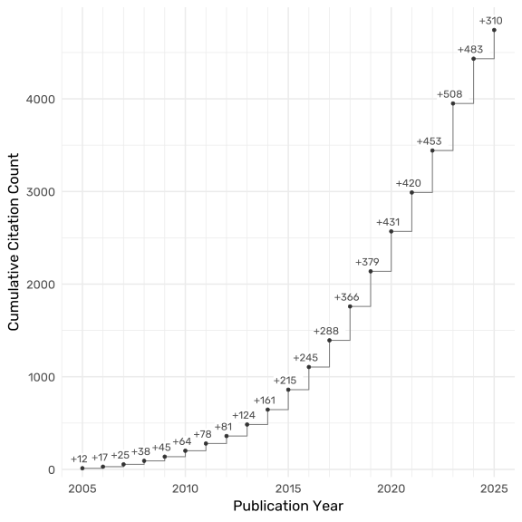

Curriculum Vitae
W. Joel Schneider
Temple University
College of Education & Human Development
Psychological Studies in Education
493 Ritter Hall
Philadelphia, PA 19122-6091
Office: (215) 204-8093
Email: schneider@temple.edu
Web: Faculty Profile
Assessment Blog: AssessingPsyche R Blog: AssessingPsyche
Education
| 1996–2003 | Texas A&M University Ph.D. in Clinical Psychology (2003) Dissertation: The Transtheoretical Model of Change in Couples |
| M.S. in Clinical Psychology (1999) Thesis: The Moderating Influence of Perceived Containment on the Relation between Child Externalizing Behaviors and Parenting Practices |
|
| 1989–1994 | University of California, Berkeley B.S. in Psychology (1994) |
Academic Positions
| 2017– | Temple University | Professor (2021–) |
| Philadelphia PA | Associate Professor (2017–2021) | |
| 2002–2017 | Illinois State University | Professor (2014–2017) |
| Normal IL | Associate Professor (2010–2014) | |
| Assistant Professor (2004–2010) | ||
| Full-time Lecturer (2002–2004) | ||
| 2001–2002 | Dutchess County | Psychology Intern |
| Department of Mental Hygiene | ||
| Poughkeepsie, NY |
Grant Support
- Non-linear Relations Among Academic Abilities Improve Clinical Practice and Empirical Interpretations (PI) with Aidan Campagnolio (Co-PI), $12,000, Woodcock Institute Research Grant Award (July 2025–December 2025).
- Virtual Charter School Performance Reviews and Support [Extension] (PI), with Christopher McGinley, Sarah Cordes, and Beth Olanoff, $480,960, Pennsylvania Department of Education (2022–2023).
- Statistical Validation Analysis of the Functional Cattell Horn Carroll (F-CHC) Model with Measures of Intelligence (PI), $15,000, Woodcock Institute Research Grant Award (January 2021–July 2021).
- GeometryByExample: Developing an Effective Intervention for Varied Geometry Content and Learner Characteristics (Co-PI), with Julie Booth (PI), Kelly McGinn, Christina Barbieri, & M. Suzanne Donovan, $1,396,715, US Department of Education R305A190126 (July 2019–June 2022).
- Virtual Charter School Performance Reviews and Support (PI), with Christopher McGinley, Sarah Cordes, Beth Olanaff, and Annemarie Hindman, $511,560, Pennsylvania Department of Education (2020–2021).
- The Roots and Fruits of Positive School Climate: A Multilevel Examination of School Climate’s Mediating Role in the Relations Among Student Risk Factors and Student Performance Outcomes (Co-PI), with Laura Pendergast (PI) and Armando Estrada, $3000, Pennsylvania Department of Education (2018–2019).
- Development of the Compositator (PI), $11,000, Woodcock-Muñoz Foundation (2008–2010)
- Exploring the Impact of Cognitive Abilities on Behavior Problems (PI), $2500, Illinois State University (2005)
Publications
Publication Indices
- Google Scholar Citations: 4862
- h-index: 28
- i10-index: 41

Books
Cohen, R. J., Schneider, W. J., & Tobin, R. M. (2025). Psychological testing and assessment: An introduction to tests and measurement (11th ed.). McGraw Hill LLC.
Schneider, W. J. (2024). Individual psychometrics: An assessment toolkit with applications in R. Author.
Cohen, R. J., Schneider, W. J., & Tobin, R. M. (2022). Psychological testing and assessment: An introduction to tests and measurement (10th ed.). McGraw Hill LLC.
Schneider, W. J., Mather, N., Lichtenberger, E. O., & Kaufman, N. L. (2018). Essentials of assessment report writing (2nd ed.). Wiley.
Journal Articles
Hajovsky, D. B., Niileksela, C. R., Flanagan, D. P., Alfonso, V. C., Schneider, W. J., & Robbins, J. (2025). Toward a consensus model of cognitive–reading achievement relations using meta-structural equation modeling. Journal of Intelligence, 13(8), 104. https://doi.org/10.3390/jintelligence13080104
Kane, C., Sandilos, L., Schneider, W. J., & Tobin, R. M. (2025). The influence of social-emotional learning programs on key outcomes for dual language learners in Head Start. Early Education and Development, 1–24. https://doi.org/10.1080/10409289.2025.2526310
Schneider, W. J., Flanagan, D. P., Niileksela, C. R., & Engler, J. R. (2024). The effect of measurement error on the positive predictive value of PSW methods for SLD identification: How buffer zones dispel the illusion of inaccuracy. Journal of School Psychology, 103. https://doi.org/10.1016/j.jsp.2023.101280
McGrew, K. S., Schneider, W. J., Decker, S. L., & Bulut, O. (2023). A psychometric network analysis of CHC intelligence measures: Implications for research, theory, and interpretation of broad CHC scores “beyond g”. Journal of Intelligence, 11(1), 19. https://doi.org/10.3390/jintelligence11010019
Schneider, W. J., & Ji, F. (2023). Detecting unusual score patterns in the context of relevant predictors. Journal of Pediatric Neuropsychology, 9, 1–17. https://doi.org/10.1007/s40817-022-00137-x
Dowdy, A., Peltier, C., Tincani, M., Schneider, W. J., Hantula, D. A., & Travers, J. C. (2021). Meta‐analyses and effect sizes in applied behavior analysis: A review and discussion. Journal of Applied Behavior Analysis, 54(4), 1317–1340. https://doi.org/10.1002/jaba.862
Dowdy, A., Tincani, M., & Schneider, W. J. (2020). Evaluation of publication bias in response interruption and redirection: A meta‐analysis. Journal of Applied Behavior Analysis, 53(4), 2151–2171. https://doi.org/10.1002/jaba.724
Hajovsky, D. B., Villeneuve, E. F., Schneider, W. J., & Caemmerer, J. M. (2020). An alternative approach to cognitive and achievement relations research: An introduction to quantile regression. Journal of Pediatric Neuropsychology, 6, 83–95. https://doi.org/10.1007/s40817-020-00086-3
Dombrowski, S. C., Beaujean, A. A., McGill, R. J., Benson, N. F., & Schneider, W. J. (2019). Using exploratory bifactor analysis to understand the latent structure of multidimensional psychological measures: An example featuring the WISC-V. Structural Equation Modeling: A Multidisciplinary Journal, 26(6), 847–860. https://doi.org/10.1080/10705511.2019.1622421
Schneider, W. J., & McGrew, K. S. (2019). Process Overlap Theory is a milestone achievement among intelligence theories. Journal of Applied Research in Memory and Cognition, 8(3), 273–276. https://doi.org/https://doi.org/10.1016/j.jarmac.2019.06.006
Schneider, W. J., & Roman, Z. (2018). Fine-tuning Cross-Battery Assessment procedures: After follow-up testing, use all valid scores, cohesive or not. Journal of Psychoeducational Assessment, 36(1), 34–54. https://doi.org/10.1177/0734282917722861
Magoon, M. A., Critchfield, T. S., Merrill, D., Newland, M. C., & Schneider, W. J. (2017). Are positive and negative reinforcement “different”? Insights from a free-operant differential outcomes effect. Journal of the Experimental Analysis of Behavior, 107(1), 39–64. https://doi.org/10.1002/jeab.243
Schneider, W. J., & Kaufman, A. S. (2017). Let’s not do away with comprehensive cognitive assessments just yet. Archives of Clinical Neuropsychology, 32(1), 8–20. https://doi.org/10.1093/arclin/acw104
Flanagan, D. P., & Schneider, W. J. (2016). Cross-Battery Assessment? XBA PSW? A case of mistaken identity: A commentary on Kranzler and colleagues’ “Classification agreement analysis of Cross-Battery Assessment in the identification of specific learning disorders in children and youth”. International Journal of School & Educational Psychology, 4(3), 137–145. https://doi.org/10.1080/21683603.2016.1192852
Gadke, D. L., Tobin, R. M., & Schneider, W. J. (2016). Agreeableness, conflict resolution tactics, and school behavior in second graders. Journal of Individual Differences, 37, 145–151. https://doi.org/10.1027/1614-0001/a000199
Schneider, W. J., & Kaufman, A. S. (2016). Commentary on current practices and future directions for the assessment of child and adolescent intelligence in schools around the world. International Journal of School & Educational Psychology, 4(4), 283–288. https://doi.org/10.1080/21683603.2016.1206383
Schneider, W. J., Mayer, J. D., & Newman, D. A. (2016). Integrating hot and cool intelligences: Thinking broadly about broad abilities. Journal of Intelligence, 4(1), 1:1–25. https://doi.org/10.3390/jintelligence4010001
Schneider, W. J., & Newman, D. A. (2015). Intelligence is multidimensional: Theoretical review and implications of specific cognitive abilities. Human Resource Management Review, 25(1), 12–27. https://doi.org/10.1016/j.hrmr.2014.09.004
Abney, D. H., Wagman, J. B., & Schneider, W. J. (2014). Changing grasp position on a wielded object provides self-training for the perception of length. Attention, Perception, & Psychophysics, 76(1), 247–254. https://doi.org/10.3758/s13414-013-0550-x
Pornprasertmanit, S., & Schneider, W. J. (2014). Accuracy in parameter estimation in cluster randomized designs. Psychological Methods, 19(3), 356–379. https://doi.org/10.1037/a0037036
Herbstrith, J. C., Tobin, R. M., Hesson-McInnis, M. S., & Schneider, W. J. (2013). Preservice teacher attitudes toward gay and lesbian parents. School Psychology Quarterly, 28(3), 183–194. https://doi.org/10.1037/spq0000022
Kahn, J. H., & Schneider, W. J. (2013). It’s the destination and it’s the journey: Using multilevel modeling to assess patterns of change in psychotherapy. Journal of Clinical Psychology, 69(6), 543–570. https://doi.org/10.1002/jclp.21964
Schneider, W. J. (2013). What if we took our models seriously? Estimating latent scores in individuals. Journal of Psychoeducational Assessment, 31(2), 186–201. https://doi.org/10.1177/0734282913478046
Decker, S. L., Schneider, W. J., & Hale, J. B. (2012). Estimating base rates of impairment in neuropsychological test batteries: A comparison of quantitative models. Archives of Clinical Neuropsychology, 7(1), 69–84. https://doi.org/10.1093/arclin/acr088
Jones, G., & Schneider, W. J. (2010). IQ in the production function: Evidence from immigrant earnings. Economic Inquiry, 48(3), 743–755. https://doi.org/10.1111/j.1465-7295.2008.00206.x
Guidry, J. A., Babin, B. J., Graziano, W. G., & Schneider, W. J. (2009). Pride and prejudice in the evaluation of wine? International Journal of Wine Business Research, 21(4), 298–311. https://doi.org/10.1108/17511060911004888
Hoff, K. E., Reese-Weber, M., Schneider, W. J., & Stagg, J. W. (2009). The association between high status positions and aggressive behavior in early adolescence. Journal of School Psychology, 47(6), 395–426. https://doi.org/10.1016/j.jsp.2009.07.003
Barr, L. K., Kahn, J. H., & Schneider, W. J. (2008). Individual differences in emotion expression: Hierarchical structure and relations with psychological distress. Journal of Social and Clinical Psychology, 27(10), 1045–1077. https://doi.org/10.1521/jscp.2008.27.10.1045
Kahn, J. H., Vogel, D. L., Schneider, W. J., Barr, L. K., & Herrell, K. (2008). The emotional content of client disclosures and session impact: An analogue study. Psychotherapy: Theory, Research, Practice, Training, 45(4), 539–545. https://doi.org/10.1037/a0014337
Schneider, W. J. (2008). Playing statistical Ouija board with commonality analysis: good questions, wrong assumptions. Applied Neuropsychology, 15(1), 44–53. https://doi.org/10.1080/09084280801917566
Jones, G., & Schneider, W. J. (2006). Intelligence, human capital, and economic growth: A Bayesian Averaging of Classical Estimates (BACE) approach. Journal of Economic Growth, 11(1), 71–93. https://doi.org/10.2139/ssrn.552481
Schneider, W. J., Timothy Cavell, A., & Hughes, J. N. (2003). A sense of containment: Potential moderator of the relation between parenting practices and children’s externalizing behaviors. Development and Psychopathology, 15(1), 95–117. https://doi.org/10.1017/S0954579403000063
Chapters
Schneider, W. J., & Tobin, R. M. (2024). Sophisticated simplicity: Writing reader-friendly assessment reports. In R. Flanagan (Ed.) Clinical guide to effective psychological assessment and report writing (pp. 1–11). Springer International Publishing. https://doi.org/10.1007/978-3-031-67184-5_1
Schneider, W. J. (2022). Statistical and clinical interpretation guidelines for school neuropsychological assessment. In D. Miller, D. Maricle, C. Bedford, & J. Gettman (Eds.) Best Practices in School Neuropsychology: Guidelines for Effective Practice, Assessment, and Evidence‐Based Intervention (1st ed., pp. 163–184). Wiley. https://doi.org/10.1002/9781119790563
Floyd, R. G., Farmer, R. L., Schneider, W. J., & McGrew, K. S. (2021). Theories and measurement of intelligence. In L. Glidden, L. Abbeduto, L. L. McIntyre, & M. J. Tassé (Eds.) APA handbook of intellectual and developmental disabilities (Vol. 1, pp. 386–424). American Psychological Association. https://doi.org/10.1037/0000194-015
Kaufman, A. S., Schneider, W. J., & Kaufman, J. C. (2019). Psychometric approaches to intelligence. In R. J. Sternberg (Ed.) Human intelligence: An introduction (pp. 67–103). Cambridge University Press.
Schneider, W. J., & McGrew, K. S. (2018). The Cattell-Horn-Carroll theory of intelligence. In D. P. Flanagan, & E. M. McDonough (Eds.) Contemporary intellectual assessment: Theories, tests, and issues (4th ed., pp. 73–130). Guilford Press.
Schneider, W. J. (2016). Case 1—Liam, age 9: Emotionally intelligent testing with the WISC-V and CHC theory. In A. S. Kaufman, S. Raiford, & D. Coalson (Eds.) Intelligent testing with the WISC-V (pp. 265–282). Wiley.
Schneider, W. J. (2016). Strengths and weaknesses of the Woodcock-Johnson IV Tests of Cognitive Abilities: Best practice from a scientist-practitioner perspective. In D. P. Flanagan, & V. C. Alfonso (Eds.) WJ IV Clinical Use and Interpretation (pp. 191–210). Academic Press. https://doi.org/10.1016/B978-0-12-802076-0.00007-4
Schneider, W. J., & Flanagan, D. P. (2015). The relationship between theories of intelligence and intelligence tests. In S. Goldstein, D. Princiotta, & J. A. Naglieri (Eds.) Handbook of intelligence: Evolutionary theory, historical perspective, and current concepts (pp. 317–340). Springer.
Tobin, R. M., Schneider, W. J., & Landau, S. (2014). Best practices in the assessment of youth with attention deficit hyperactivity disorder within a multitiered services framework. In A. Thomas, & P. Harrison (Eds.) Best practices in school psychology: Data-based and collaborative decision making (pp. 391–404). National Association of School Psychologists.
Schneider, W. J. (2013). Principles of assessment of aptitude and achievement. In D. Saklofske, C. R. Reynolds, & V. Schwean (Eds.) The Oxford Handbook of Child Psychological Assessment (pp. 286–330). Oxford University Press.
Schneider, W. J., & McGrew, K. S. (2013). Cognitive performance models: Individual differences in the ability to process information. In B. Irby, G. Brown, R. Laro-Alecio, & S. Jackson (Eds.) Handbook of educational theories (pp. 767–782). Information Age Publishing.
Schneider, W. J., & McGrew, K. S. (2012). The Cattell-Horn-Carroll model of intelligence. In D. P. Flanagan, & P. L. Harrison (Eds.) Contemporary intellectual assessment: Theories, tests, and issues (3rd ed., pp. 99–144). Guilford Press.
Tobin, R. M., Schneider, W. J., Reck, S. G., & Landau, S. (2008). Best practices in the assessment of children with attention deficit hyperactivity disorder: Linking assessment to response to intervention. In P. Harrison, & A. Thomas (Eds.) Best Practices in School Psychology V (Vol. 2, pp. 617–631). National Association of School Psychologists.
Snyder, D. K., Schneider, W. J., & Castellani, A. M. (2003). Tailoring couple therapy to individual differences: A conceptual approach. In D. K. Snyder (Ed.) Treating difficult couples: Helping clients with coexisting mental and relationship disorders (pp. 27–51). Guilford Press.
Snyder, D. K., & Schneider, W. J. (2002). Affective reconstruction: A pluralistic, developmental approach. In N. S. Jacobson (Ed.) Clinical handbook of couple therapy (3rd ed., pp. 151–179). Guilford Press.
Test Reviews
Swerdlik, M. E., & Schneider, W. J. (2010). Review of the PsychProfiler. In R. A. Spies, J. F. Carlson, B. S. Plake, & K. F. Geisinger (Eds.) The eighteenth mental measurements yearbook. Buros Institute.
Schneider, W. J. (2007). Review of the Dean-Woodcock Neuropsychological Battery. In K. F. Geisinger, R. A. Spies, J. F. Carlson, & B. S. Plake (Eds.) The seventeenth mental measurements yearbook. Buros Institute.
Schneider, W. J. (2007). Review of the Multiple Intelligence Developmental Assessment Scales (MIDAS). In K. F. Geisinger, R. A. Spies, J. F. Carlson, & B. S. Plake (Eds.) The seventeenth mental measurements yearbook. Buros Institute.
Schneider, W. J., & Swerdlik, M. E. (2007). Review of the Youth Outcome Questionnaire 30.1. In K. F. Geisinger, R. A. Spies, J. F. Carlson, & B. S. Plake (Eds.) The seventeenth mental measurements yearbook. Buros Institute.
Swerdlik, M. E., & Schneider, W. J. (2007). Review of the Behavior Evaluation Scale, Third Edition. In K. F. Geisinger, R. A. Spies, J. F. Carlson, & B. S. Plake (Eds.) The seventeenth mental measurements yearbook. Buros Institute.
Hoff, K. E., & Schneider, W. J. (2005). Review of the Child Symptom Inventory-4. In B. S. Plake, J. C. Impara, & R. A. Spies (Eds.) The sixteenth mental measurements yearbook. Buros Institute.
Schneider, W. J., & Hoff, K. E. (2005). Review of the Word Identification and Spelling Test. In B. S. Plake, J. C. Impara, & R. A. Spies (Eds.) The sixteenth mental measurements yearbook. Buros Institute.
Schneider, W. J., & Swerdlik, M. E. (2005). Review of the Memory Test for Older Adults. In B. S. Plake, J. C. Impara, & R. A. Spies (Eds.) The sixteenth mental measurements yearbook. Buros Institute.
Swerdlik, M. E., & Schneider, W. J. (2005). Review of the Behavioral and Emotional Rating Scale-Second Edition. In B. S. Plake, J. C. Impara, & R. A. Spies (Eds.) The sixteenth mental measurements yearbook. Buros Institute.
Scholarly Reports
Blume, J. H., & Paavola, E. C. (2025). Brief of Amici Curiae Randy W. Kamphaus, Kevin S. McGrew, Cecil R. Reynolds, W. Joel Schneider, and Marc J. Tasse, Blaine Keith Milam v. Texas. .
Goldrick-Rab, S., Richardson, J., Schneider, W. J., Hernandez, A., & Cady, C. (2018). Still hungry and homeless in college. The Wisconsin HOPE Lab.
Schneider, W. J. (2016). The RESCA-E subtests are thoughtfully designed and highly refined measures of CHC constructs: A review of the Receptive, Expressive & Social Communication Assessment–Elementary. Assessing Psyche, Engaging Gauss, Seeking Sophia.
Schneider, W. J. (2016). Why are WJ IV cluster scores more extreme than the average of their parts? A gentle explanation of the composite score extremity effect. Houghton Mifflin HarcourtWoodcock-Johnson IV Assessment Service Bulletin.
Schneider, W. J., & McGrew, K. S. (2011). “Just say no” to averaging IQ subtest scores. IAP Applied Psychometrics 101 Report.
Software
Schneider, W. J. (2024). condppv: Conditional positive predictive value in the accuracy of specific learning disability identification. [Software] AssessingPsyche. Retrieved from https://github.com/wjschne/conditionalppv
Schneider, W. J. (2024). ggdiagram: Object-oriented diagram plots with ggplot2. [Software] AssessingPsyche.
Schneider, W. J. (2023). apaquarto: A Quarto extension for creating APA 7 style documents. [Software] AssessingPsyche. Retrieved from https://github.com/wjschne/apaquarto
Schneider, W. J. (2023). arrowheadr: Create custom arrowheads for ggplot2 via ggarrow.. [Software] AssessingPsyche. Retrieved from https://doi.org/10.32614/CRAN.package.arrowheadr
Schneider, W. J. (2022). UnusualProfile: A user-friendly web application to impliment functions from the unusualprofile package.. [Software] AssessingPsyche. Retrieved from https://github.com/wjschne/unusualprofile_app
Schneider, W. J. (2021). Area under the normal curve. [Software] AssessingPsyche. Retrieved from https://github.com/wjschne/AreaUnderNormalCurve
Schneider, W. J. (2021). psycheval: A psychological evaluation toolkit. [Software] AssessingPsyche.
Schneider, W. J. (2021). Simple regression with standard scores. [Software] AssessingPsyche. Retrieved from https://github.com/wjschne/simple_regression
Schneider, W. J. (2021). ztestvis: A Jamovi module for conducting a one-sample z-test. [Software] AssessingPsyche. Retrieved from https://github.com/wjschne/ztest
Schneider, W. J., & Ji, F. (2021). unusualprofile: Calculate conditional Mahalanobis distances. [Software] AssessingPsyche. Retrieved from https://doi.org/10.32614/CRAN.package.unusualprofile
Schneider, W. J. (2018). ggnormalviolin. [Software] AssessingPsyche. Retrieved from https://doi.org/10.32614/CRAN.package.ggnormalviolin
Schneider, W. J. (2018). simstandard. [Software] AssessingPsyche. Retrieved from https://doi.org/10.32614/CRAN.package.simstandard
Schneider, W. J. (2012). TableMaker. [Software] AssessingPsyche.
Presentations
Lectures
Schneider, W. J., Tassé, M. J., & Blume, J. H. (2025, April 26). Intellectual Disability Identification: Common Problems on Prong I. [Panel]. Twenty-Second National Seminar on the Development and Presentation of Mitigating Evidence in Capital Cases , Columbus, OH. https://advancechange.org/events/national-seminar-on-the-development-and-integration-of-mitigation-evidence-in-capital-cases-04-24-2025/
Tassé, M. J., Schneider, W. J., & Olley, G. (2025, April 24). The APA’s Professional Guidelines for Forensic Assessments of ID. [Panel]. Twenty-Second National Seminar on the Development and Presentation of Mitigating Evidence in Capital Cases , Columbus, OH. https://advancechange.org/events/national-seminar-on-the-development-and-integration-of-mitigation-evidence-in-capital-cases-04-24-2025/
Schneider, W. J. (2025, February 3). Making survey tests psychometrically sound. [Lecture]. Leadership Education in Neurodevelopmental Disabilities Program , Children’s Hospital of Philadelphia.
Schneider, W. J. (2025, January 24). Advanced Interpretation Techniques with the Woodcock-Johnson V. [Webinar]. Comprehensive Assessment for Intervention . https://caipsychs.com/conferences/
Schneider, W. J. (2024, October 18). Individual Psychometrics. [Webinar]. Illinois School Psychologists Association . https://www.ilispa.org/fall-conference
Schneider, W. J. (2024, March 15). Evidence-based assessment and clinical decision-making in school psychology. [Webinar]. 2024 Illinois School Psychologists Association Annual Convention . https://www.ilispa.org/annual-convention
Schneider, W. J. (2024, February 26). Making survey tests psychometrically sound. [Lecture]. Leadership Education in Neurodevelopmental Disabilities Program , Children’s Hospital of Philadelphia.
Engler, J. R., Schneider, W. J., Flanagan, D. P., & Niileksela, C. R. (2024, February 16). Improve PSW case conceptualization accuracy by taking measurement error seriously. [Mini-Skills Workshop]. National Association of School Psychologists Annual Convention , New Orleans, LA.
Schneider, W. J. (2024, January 25). Confidently correct specific learning disability identification. [Webinar]. Comprehensive Assessment for Intervention . https://caipsychs.com/conferences/
Schneider, W. J. (2023, November 4). Using arrowheadr with ggarrow and ggplot2. [Webinar]. ggplot2 Extenders .
Schneider, W. J. (2023, September 27). Intelligence, critical thinking, and creativity. [Symposium]. In G. Alves (Moderator), Para Além dos Testes Tradicionais: Integrando Inovações à Avaliação de Criatividade e Pensamento Crítico (Beyond Traditional Tests: Integrating Innovations into the Assessment of Creativity and Critical Thinking) , Instituto Ayrton Senna, São Paulo, Brazil. https://institutoayrtonsenna.org.br/nossos-materiais/noticias/catedra-instituto-ayrton-senna-no-iea-usp-promove-live-integrando-inovacao-avaliacao-criatividade-pensamento-critico/
Schneider, W. J. (2023, July 29). How recent theories of intelligence can improve the practice of cognitive ability assessment. [Panel]. International Society for Intelligence Research 2023 Annual Conference , Berkelety, CA. https://isironline.org/2023/01/isir-2023-berkeley-california-july-26-29/
Schneider, W. J. (2023, March 24). Assessments that restore hope, promote understanding and inspire change. [Invited Lecture]. 42nd Annual School Psychology, Counseling Psychology and Applied Behavior Analysis Conference , Philadelphia, PA. https://education.temple.edu/node/50031
Schneider, W. J. (2022, November 15). Using imaginary data to conserve real resources: Study design planning with model-based simulations. [Lecture]. Pearson 4th Developers Conversation .
Flanagan, D. P., Koponen, T., Wagner, R. K., Colvin, M. K., & Schneider, W. J. D. (2022, November 4). How do we diagnose learning disabilities? [Virtual Summit]. Learning Disabilities Summit: A Three-Part Virtual Event Focused on Crticial Learning Disability Issues , Learning Disabilities Association of America. https://ldaamerica.org/lda-to-hold-learning-disabilities-summit/
Schneider, W. J. (2022, July 27). What is the current state of affairs of IQ testing? [Keynote Address]. 2022 Knowledge, Innovation & Enterprise (KIE) Conference: Unpacking Creativity: Culture, Innovation, and Motivation in Global Contexts .
Schneider, W. J. (2022, March 29). How measurement error affects learning disability identification accuracy. [Lecture]. Pearson Scientific Advisory Council .
Schneider, W. J. (2022, March 28). Practical psychometrics: Robust interpretation for individuals. [Lecture]. Temple University School Psychology Owl Hour , Philadelphia, PA.
Schneider, W. J. (2022, January 27). Life-and-death psychometrics: IQ and the death penalty. [Webinar]. Owl Hour , Temple University. https://events.temple.edu/owl-hour-life-and-death-psychometrics-iq-and-the-death-penalty
Hajovsky, D. B., & Schneider, W. J. (2021, September 24). Cognitive assessment in the evaluation of specific learning disabilities. [Webinar]. Missouri Association of School Psychologists 2021 Fall Conference , Weldon Spring, MO. https://maosp.wildapricot.org/resources/Documents/Fall%20Conference.pdf
Schneider, W. J. (2021, July 29). Advances in test interpretation with the Cattell-Horn-Carroll Theory of Cognitive Abilities. [Webinar]. Training for Region 19 Evaluation Staff , Education Service Center, Region 19, El Paso, TX. https://wjschne.github.io/media/CHCTheoryWebinar.pdf
Schneider, W. J. (2021, June 14). Using CHC theory to better understand student needs. [Webinar]. Hill Country Summer Institute . https://esc13.net/events/hill-country-summer-institute-2021
Schneider, W. J. (2021, February 5). The accuracy of PSW methods. In J. R. Engler (Chair), PSW for SLD identification: Does cognition matter? [Symposium]. National Association of School Psychologists Annual Convention , Salt Lake City, UT. https://apps.nasponline.org/professional-development/convention/session-detail.aspx?id=20263
Schneider, W. J. (2021, January 22). Improving LD identification with fewer myths and more science. [Invited Lecture]. Science to Practice Virtual Conference , Learning Disability Association of America.
Schneider, W. J. (2020, July 29). Curious about CHC Theory? Take your evaluations to the next level! [Webinar]. Riverside Insights , Rolling Meadows, IL. https://info.riversideinsights.com/chc-theory-webinar
Schneider, W. J. (2019, April 3). The evolution of PSW methods of SLD identification: What I have learned from PSW proponents. [Keynote Address]. Annual School Neuropsychology Conference , Long Beach, CA.
Schneider, W. J. (2019, April 1). The evolution of PSW methods of SLD identification: What I have learned from PSW critics. [Keynote Address]. Annual School Neuropsychology Conference , Long Beach, CA.
Flanagan, D. P., Schneider, W. J., & Alfonso, V. C. (2019, February 26). PSW methods: Comparisons, research, and how to use them responsibly. [Symposium]. National Association of School Psychologists Annual Convention , Atlanta, GA.
Schneider, W. J. (2019, February 26). Consumer-oriented and legally defensible psychoeducational reports–Advanced workshop. [Invited Workshop]. National Association of School Psychologists Conference , Atlanta, GA.
Schneider, W. J. (2019, February 26). Consumer-oriented and legally defensible psychoeducational reports–Introductory workshop. [Invited Workshop]. National Association of School Psychologists Conference , Atlanta, GA.
Schneider, W. J. (2018, February 16). Re-evaluating the accuracy of the Dual Discrepancy/Consistency Model for SLD Identification. [Lecture]. National Association of School Psychologists Annual Convention , Chicago, IL.
McGrew, K. S., & Schneider, W. J. (2018, February 15). Revisions to the Cattell-Horn-Carroll (CHC) Theory of Intelligence. [Lecture]. National Association of School Psychologists Annual Convention , Chicago, IL.
Schneider, W. J. (2016, October 24). How to write psychoeducational reports that people will want to read all the way through. [Webinar]. KIPP Austin Public Schools and Texas State University School Psychology Program .
McGrew, K. S., & Schneider, W. J. (2016, October 19). Porque as habilidades cognitivas importam na educação [Why cognitive abilities matter in education]. [Invited Lecture]. Instituto Ayrton Senna , São Paulo, Brazil.
Schneider, W. J., & McGrew, K. S. (2016, October 18). CHC theory, complex problem solving, critical thinking, and creativity. [Invited Lecture]. Instituto Ayrton Senna , São Paulo, Brazil.
McGrew, K. S., & Schneider, W. J. (2016, October 17). CHC theory and education in Brazil. [Invited Lecture]. Instituto Ayrton Senna , São Paulo, Brazil.
Schneider, W. J. (2016, August 4). Writing reports worth reading all the way through. In R. Flanagan (Chair), Sophisticated simplicity: The art of writing reader-friendly assessment reports [Symposium]. Annual American Psychological Association Convention , Denver, CO.
Schneider, W. J. (2016, July 29). How to write psychoeducational reports that people will want to read all the way through. [Webinar]. New Brunswick Department of Education and Early Childhood Development , Fredericton, NB.
Schneider, W. J. (2016, April 12). How to write psychoeducational reports that people will want to read. [Webinar]. Region 10 Education Service Center , Richardson, TX.
Cormier, D. C., Bulut, O., Niileksela, C. R., Funamoto, A., & Schneider, W. J. D. (2016, February 12). Revisiting the relationship between CHC abilities and academic achievement. [Symposium]. National Association of School Psychologists Annual Convention , New Orleans, LA.
Schneider, W. J. (2015, July 15). I didn’t know the WJ IV could do that! Answering practical assessment questions you didn’t know you could ask. [Invited Lecture]. School Neuropsychology Summer Institute , Grapevine, TX.
Schneider, W. J. (2014, February 15). What if we took our models seriously? Estimating latent scores in individuals. [Lecture]. National Association of School Psychologists Convention , Washington, D.C..
Schneider, W. J. (2013, July 15). Advances in CHC Theory and its application to individuals. [Invited Lecture]. School Neuropsychology Summer Institute , Grapevine, TX.
Schneider, W. J. (2013, February 13). Holes in CHC Theory. [Lecture]. National Association of School Psychologists Conference , Seattle, WA.
Schneider, W. J., & Taylor, S. J. (2008, October 1). Can the Implicit Association Test be used as a lie detector? Morality, implicit attitudes, and Big Brother’s help measuring illegal file-sharing behavior. [Invited Lecture]. Center for Study of Public Choice at George Mason University , Fairfax, VA.
Schneider, W. J. (2006, November 15). We need to change (but I won’t do anything because I’m not the problem): Couples therapy outcomes and the transtheoretical model of change. [Invited Lecture]. Colloquium at Purdue Unversity , West Lafayette, IN.
Schneider, W. J., & Huber, B. (2004, March 15). The interactive effects of fluid intelligence and executive functions on behavior disorders in children. [Lecture]. Annual Meeting of the Illinois School Psychology Association , Springfield, IL.
Posters and Papers
An, C., Schneider, W. J., Campagnolio, A., & Fiorello, C. A. (2025, February 20). Rigorous Procedures for Measuring Broad and Narrow Abilities in Individuals [Poster]. National Association of School Psychologists Convention, Seattle, WA.
Campagnolio, A., Schneider, W. J., & An, C. (2025, February 20). Non-linear Relations among Reading Abilities Affect Score Interpretations [Poster]. National Association of School Psychologists Convention, Seattle, WA.
Hajovsky, D. B., Niileksela, C. R., Flanagan, D. P., Alfonso, V. C., Schneider, W. J., & Zinkiewicz, C. J. (2022, August 4). Toward a consensus model of cognitive-achievement relations using meta-SEM [Poster]. American Psychological Association Convention, Minneapolis, MN.
Schneider, W. J., Flanagan, D. P., Niileksela, C. R., & Engler, J. R. (2020, February 20). Reevaluating the accuracy of PSW methods of SLD identification [Poster]. National Association of School Psychologists Convention, Baltimore, MD.
Schneider, W. J., & Fiorello, C. A. (2019, August 8). Broad abilities are not doomed to be measured unreliably: A Monte Carlo study of omega statistics [Poster]. American Psychological Association Convention, Chicago, IL. https://github.com/wjschne/APA2019
Mulderink, T. D., Tobin, R. M., & Schneider, W. J. (2018, August 10). Personality, interactive history, and situational factors during children’s games [Poster]. Annual American Psychological Association Convention, San Francisco, CA.
Howe, A. R., Curnock, A. D., Koppenhoefer, S. E., Schneider, W. J., & Tobin, R. M. (2016, August 4). Do vocabulary skills and instructor influence social-emotional learning? [Poster]. Annual American Psychological Association Convention, Denver, CO.
Nicholls, C. J., Ross, E., & Schneider, W. J. (2016, April 15). The neuropsychological profiles of twins discordant for Sotos Syndrome: A case study [NA]. American Academy of Pediatric Neuropsychology Annual Conference, Las Vegas, NV.
Curnock, A. D., Pajor, K. E., Tobin, R. M., & Schneider, W. J. (2016, February 12). Preschoolers’ engagement during Second Step and their social-emotional knowledge [Poster]. National Association of School Psychologists Annual Convention, New Orleans, LA.
Engelland, J. L., Tobin, R. M., Meyers, A., Huber, B., Schneider, W. J., Austen, J. H., & Corbin, A. L. (2014, August 12). Longitudinal effects of school climate on middle school students’ development [Poster]. Annual American Psychological Association Convention, Washington, D.C..
Affrunti, C. L., Schneider, W. J., Tobin, R. M., & Collins, K. D. (2014, August 7). Predictors of academic outcomes in college students suspected of having learning disorders [Poster]. Annual American Psychological Association Convention, Washington, D.C..
Sondalle, A. A., Tobin, R. M., & Schneider, W. J. (2014, August 7). Behavioral engagement, Second Step edition, and children’s social-emotional functioning [Poster]. Annual American Psychological Association Convention, Washington, D.C..
Sondalle, A. A., Probst, K. G., Carreno, C., Tobin, R. M., Schneider, W. J., Moore, N. A., & Mulderink, T. D. (2014, February 15). Engagement during Second Step and kindergarteners’ social-emotional and academic outcomes [Poster]. National Association of School Psychologists Convention, Washington, D.C..
Sondalle, A. A., Probst, K. G., Tobin, R. M., Schneider, W. J., & Kestian, J. M. (2014, February 15). Second Step and teacher ratings of children’s social-emotional functioning [Poster]. National Association of School Psychologists Conference, Washington, D.C..
Tobin, R. M., Schneider, W. J., Moore, N. A., Sondalle, A. A., & Willis, M. (2013, August 15). Effortful control and knowledge gains after the Second Step intervention [Poster]. Annual American Psychological Association Convention, Honolulu, HI.
Moore, N. A., Sondalle, A. A., Mulderink, T. D., Tobin, R. M., Schneider, W. J., Willis, M., & Probst, K. G. (2013, February 15). Effortful control, Second Step, and behavior in kindergartners [Poster]. National Association of School Psychologists Convention, Seattle, WA.
Sondalle, A. A., Mulderink, T. D., Moore, N. A., Tobin, R. M., & Schneider, W. J. (2012, August 15). Engagement, dosage, and effectiveness of the kindergarten Second Step curriculum [Poster]. Annual American Psychological Association Convention, Orlando FL.
Mulderink, T. D., Sondalle, A. A., Moore, N. A., Tobin, R. M., Schneider, W. J., & Sheese, B. E. (2012, February 15). Influences of executive functioning and Second Step on behavior [Poster]. National Association of School Psychologists Conference, Philadelphia, PA.
Mulderink, T. D., Moore, N. A., Sondalle, A. A., Tobin, R. M., & Schneider, W. J. (2011, August 15). Executive functioning and responsiveness to Second Step [Poster]. Annual American Psychological Association Convention, Washington, D.C..
Tobin, R. M., Mackin, J. M., Babcock, E. A., Mulderink, T. D., Moore, N. A., Carlson, L. A., Gioia, K. A., & Schneider, W. J. (2011, February 15). Intervention frequency and behavior in response to Second Step [Poster]. National Association of School Psychologists Convention, San Francisco, CA.
Tobin, R. M., Gioia, K. A., Mulderink, T. D., Carlson, L. A., Moore, N. A., & Schneider, W. J. (2010, August 15). Personality, Second Step dosage, and kindergartners’ social skills improvements [Poster]. Annual American Psychological Association Convention, San Diego CA.
Moore, N. A., Gioia, K. A., Tobin, R. M., & Schneider, W. J. (2010, March 1). Effortful control and emotion regulation in kindergartners [Poster]. National Association of School Psychologists Convention, Chicago, IL.
Obilade, M. H., Gioia, K. A., Tobin, R. M., & Schneider, W. J. (2010, March 1). Verbal ability and responsiveness to the Second Step curriculum [Poster]. National Association of School Psychologists Convention, Chicago, IL.
Schneider, W. J., & Tobin, R. M. (2010, March 1). Previously impossible feats of interpretation and explanation with cognitive and achievement data [Poster]. National Association of School Psychologists Conference, Chicago, IL.
Gioia, K. A., Tobin, R. M., & Schneider, W. J. (2010, January 15). Children’s knowledge gains in response to a social skills intervention [Poster]. Annual Illinois School Psychologist Association Convention, East Peoria, IL.
Taylor, S. A., & Schneider, W. J. (2009, October 15). Implicit attitudes in folk explanations of digital piracy [Paper]. Frontiers in Service Conference, Honolulu, HI.
Booth, B., Lederer, S., Dick, S., Linnell, J., Meyers, A., Schneider, W. J., Swerdlik, M. E., & Anweiler, J. (2009, August 15). Reintegration experiences of returning National Guard war veterans and implications for reintegration programming: Results from two states [Poster]. Annual American Psychological Association Convention, Toronto, ON.
Gadke, D. L., Tobin, R. M., & Schneider, W. J. (2009, August 15). Agreeableness and prejudice towards overweight men and women [Poster]. Annual American Psychological Association Convention, Toronto, ON.
Gioia, K. A., Tobin, R. M., & Schneider, W. J. (2009, August 15). Individual differences in children’s responsiveness to a social skills intervention [Poster]. Annual American Psychological Association Convention, Toronto, ON.
Gioia, K. A., Miller, K. A., Tobin, R. M., & Schneider, W. J. (2009, February 15). Children’s responsiveness to a social skills intervention [Poster]. National Association of School Psychologists Convention, Boston, MA.
Baird, S. A., Schneider, W. J., & Tobin, R. M. (2008, August 15). Implicit agreeableness predicts laboratory measures of aggression [Poster]. Annual American Psychological Association Convention, Boston, MA.
Barr, L. K., Kahn, J. H., & Schneider, W. J. (2008, March 15). Emotion expression tendencies and mood/anxiety symptoms [Poster]. International Counseling Psychology Conference, Chicago, IL.
Tobin, R. M., Schneider, W. J., & Landau, S. E. (2008, February 15). Assessing attention-deficit/hyperactivity disorder using an RTI approach [Poster]. National Association of School Psychologists Convention, New Orleans, LA.
Stagg, J. W., & Schneider, W. J. (2007, November 15). So you flunked the Stroop Test, so what? The utility of single vs. multiple indicators in predicting behavioral outcomes related to executive functioning among non-referred individuals [Poster]. Annual National Academy of Neuropsychology Conference, Scottsdale, AZ.
Schneider, W. J. (2007, August 15). Is the TAT helpful in assessing complex aspects of attention and executive functions? An extremely labor-intensive celebration of the null hypothesis [Poster]. Annual American Psychological Association Convention, San Francisco, CA.
Schneider, W. J., & Kasson, D. M. (2007, March 1). Do narrow abilities matter more for people with higher IQ? Implications of Spearman’s Law of Diminishing Returns for the discrepancy model of LD [Poster]. National Association of School Psychologists Convention, New York, NY.
Schneider, W. J., & McKenna, T. L. (2006, August 15). Using the Implicit Association Test to measure early maladaptive schemas [Poster]. Annual American Psychological Association Convention, New Orleans, LA.
Kahn, J. H., Vogel, D. L., Schneider, W. J., Barr, L. K., & Henning, K. (2006, April 15). Emotional self-disclosures of college-student clients and counseling session outcome [Poster]. Great Lakes Conference, West Lafayette, IN.
Jones, G. B., & Schneider, W. J. (2005, August 15). Intelligence, human capital, and economic growth [Paper]. Econometric Society World Congress, London, UK.
Tobin, R. M., Bodner, A. C., & Schneider, W. J. (2005, August 15). Executive function and emotion regulation in children [Poster]. Annual American Psychological Association Convention, Washington, D.C..
March, A., Funk, K., Schneider, W. J., & Landau, S. E. (2005, March 1). Student and teacher attributions of school shootings [Poster]. National Association of School Psychologists Convention, Atlanta, GA.
Tobin, R. M., Schneider, W. J., Graziano, W. G., & Pizzitola, K. M. (2002, February 15). Nice kids in competitive situations [Poster]. Annual Society for Personality and Social Psychology Meeting, Savannah, GA.
Snyder, D. K., Schneider, W. J., Oxford, M. C., & Quinn, T. (2001, July 15). Secondary prevention group intervention for couples [Paper]. World Congress of Behavioral and Cognitive Therapies, Vancouver, BC.
Tobin, R. M., Pizzitola, K. M., Schneider, W. J., & Graziano, W. G. (2001, April 15). Goal structures and competitiveness in children’s games [Poster]. Biennial Meeting of the Society for Research in Child Development, Minneapolis, MN.
Schneider, W. J., Loss, R. M., Cavell, T. A., & Oxford, M. C. (2000, November 15). Parenting and children with callous-unemotional traits: Relationship quality as a potential socialization mechanism [Poster]. Annual Convention of the Association for the Advancement Behavior Therapy, New Orleans, LA.
Snyder, D. K., Schneider, W. J., Oxford, M. C., & Quinn, T. (2000, November 15). SUCCESS: The efficacy of a relationship enhancement group [Poster]. Annual Convention of the Association for the Advancement Behavior Therapy, New Orleans, LA.
Schneider, W. J., Cavell, T. A., Hughes, J. N., & Oxford, M. C. (1999, August 15). The development of the Perceived Containment Questionnaire [Poster]. Annual American Psychological Association Convention, Boston, MA.
Teaching
Courses
Temple University
- CPSY 5519—Group Counseling (Spring 2018–2019)
- CPSY 5694—Introduction to Assessment (Fall 2017–2019, 2023)
- EDUC 5101—Critical Understanding of Social Science Research (Fall 2018)
- EDUC 5325—Introduction to Statistics and Research (Fall 2017, 2021)
- EPSY 5529—Tests and Measurements (Spring 2019–2020, 2022, 2023)
- EPSY 8825—Advanced Data Analysis (Spring 2020, 2022)
- SPSY 9687/8—Seminar in School Psychology/Psychoeducational Clinic (Fall 2019, Spring 2020–2021, Fall 2023)
Illinois State University
- PSY 110—Explaining Human Behavior/Fundamentals of Psychology (Fall 2002–2006, Spring 2003–2004, 2006–2007)
- PSY 138—Social Science Reasoning Using Statistics/Reasoning in Psychology Using Statistics (Spring 2004, 2008–2012, 2014; Fall 2007–2014, 2016)
- PSY 340—Statistics for the Social Sciences (Spring 2005)
- PSY 432—Psychodiagnostics I: Cognitive Assessment/ Theory and Practice of Cognitive Assessment (Fall 2004–2016)
- PSY 436—Clinical/Counseling Practicum (Spring 2004)
- PSY 442—Test Theory (Spring 2015, 2017)
- PSY 443—Regression Analysis (Spring 2016)
- PSY 444—Multivariate Analysis (Fall 2015){.smalldate}
- PSY 464—Theories and Techniques of Counseling: Adults (Spring 2005–2012, 2014–2016)
- PSY 480—Advanced Practicum in Dialectical Behavior Therapy Skills (Fall 2015–2017)
- PSY 480.31—Practicum in Dialectical Behavior Therapy Skills Training (Fall 2014, Spring 2105–2017)
- PSY 480.33—Seminar in Psychology: Supervision of a Dialectical Behavior Therapy Group (Fall 2014, Spring 2105, 2017)
Mentoring
Doctoral Dissertation Chair
Temple University
- Aidan Campagnolio
- Christine An (co-chair)
- Megan Barone
- Randy Taylor
- Bernard Dillard (2024)
- Stephanie Iaccarino (2023, co-chair)
- Justin Harper (2022, co-chair)
Illinois State University
- C. Lee Affrunti (2013)
- Daniel L. Gadke (co-chair, 2012)
- Jonathan W. Stagg (2008)
Doctoral Dissertation Committee Member
Temple University
- Emunah Mager-Garfield (2024)
- Octavia Blount (2024)
- Valerie Woxholdt (2024)
- Codie Kane (2023)
- Patrick Clancy (2023)
- Shana Levi-Nielsen (2022)
- Kaiyla Darmer (2022)
- Kathryn DeVries (2022)
- Tera Gibbs (2022)
- Mariah Davis (2022)
- Linda Ruan (2020)
Illinois State University
- Jennifer Engelland-Schultz (2015)
- Mandi Martinez-Dick (2015)
- Thomas Mulderink (2015)
- Alyssa A. Sondalle (2015)
- Rachelle Cantin (2013)
- Jennifer Wallace (2013)
- Silas Dick (2013)
- Trisha Mann (2012)
- Katherine A. Gioia (2009)
- Sarah Reck (2008)
- Anna C. Bodner (2005)
External Reviewer
- Brianna Paul (2022) Texas Women’s University
- Jake Blair Kraska (2021) Monash University
- Paul Jewsbury (2014) University of Melbourne
Master’s Thesis Chair
Illinois State University
- Feng Ji (2018)
- Katrin Klieme (2016)
- Zachary Roman (2016)
- Kiera Dymit (2015)
- Meera Afzal (2012)
- Rachelle Bauer (2010)
- Sunthud Pornprasertmanit (2010)
- David Kasson (2006)
- Kristina Taylor (2006)
- Robin Van Herrmann (2010)
- Melissa Zygmun (2006)
Master’s Thesis Committee Member
Illinois State University
- Ryan Willard (2017)
- Rachel Workman (2017)
- Hayley Love (2016)
- Anges Strojewska (2016)
- Danielle Freund (2015)
- Amanda Fisher (2015)
- Daniel Nuccio (2014)
- Kevin Wallpe (2014)
- Nicole Moore (2013)
- Drew Abney (2012)
- Thomas Mulderink (2012)
- James Clinton (2011)
- Jamie Hansen (2010)
- Yin Ying Ong (2010)
- Melanie Hewett (2010)
- Katy Adler (2008)
- Poonam Joshi (2008)
- Rebecca Hoerr (2008)
- Arusha Sethi (2008)
- Leah Barr (2008)
- Sara Byczek (2007)
Service
University Service
Illinois State University
| 2007–2017 | Coordinator and Supervisor, College Learning Assessment Service (CLAS), Psychological Services Center |
College Service
Temple University
| 2022–2023 | Member, CEHD Transition Committee |
| 2022–2023 | Member, CEHD Tenure and Promotion Committee |
| 2020 | Member, Higher Education Non-Tenure-Track Faculty Search Committee |
| 2019–2022 | Chair, Faculty Merit Committee |
| 2019 | Co-Chair, Data and Assessment Working Group |
| 2019 | Member, Higher Education Tenure-Track Faculty Search Committee |
| 2019 | Training presenter: Make Your Data POP! How to interpret and present data visually to maximize its impact |
| 2018–2019 | Member, Faculty Resource and Development Committee |
| 2018 | Member, Special Education Faculty Search committee |
| 2018 | Training presenter: Introduction to Statistical Analysis with R Workshop |
Departmental Service
Temple University
| 2018– | Member, School Psychology Program Committee |
| 2017–2020, 2023– | Member, Counseling Psychology Program Committee |
| 2020–2023 | Member, Educational Leadership Program Committee |
| 2018–2020 | Member, Departmental Promotion and Tenure Committee |
Illinois State University
| 2004–2017 | Member, Clinical/Counseling Psychology Coordinating committee |
| 2004–2017 | Member, IRB Committee |
| 2004–2017 | Member, Psychological Services Center Administrative Team |
| 2004–2017 | Member, Quantitative Psychology Sequence committee |
| 2004–2017 | Member, Research Committee |
| 2015–2017 | Member, Department Faculty Status Committee (Evaluates annual merit, tenure, and promotion) |
| 2017 | Chair, Salary Compression Review Team |
| 2015 | Program Coordinator, Quantitative Sequence (Fall only) |
| 2014 | Member, Clinical/Counseling Faculty Search committee |
| 2004–2005 | Member, Clinical/Counseling Faculty Search committee |
Consulting
| 2019– | Academic Consultant, Empass Learning, developing an online test of cognitive abilities based on CHC Theory, Gurgaon, India |
| 2014– | Expert Consultant, providing expert evaluations of death penalty and medical cases for various legal firms, US |
| 2017–2020 | Academic Consultant, PT Melintas Cakrawala, developing AJT CogTest?a comprehensive test of cognitive abilities based on CHC Theory, Jakarta, Indonesia |
| 2015–2017 | Academic Consultant, Ayrton Senna Institute, developing a comprehensive assessment of 21st century skills, Sao Paulo, Brazil |
| 2016 | Academic Consultant, Academic Therapy Publications, developing and reviewing cognitive and oral language assessment batteries, Novato, CA |
| 2007–2010 | Research Consultant, Illinois Army National Guard, conducting research examining reintegration of service personnel |
Media Appearances
| 02/03/2014 | Interviewed in Scientific American Blog Beautiful Minds by Scott Barry Kaufman |
| 08/05/2016 | Quoted in the Wall Street Journal about IQ tests |
| 10/13/2016 | Quoted in ScienceNews for Students about IQ tests |
| 10/11/2017 | Opined in the Guardian about the president’s IQ |
| 04/09/2018 | Appeared as a guest of Knowledge@Wharton Radio to discuss hunger and homelessness among college students. |
| 04/03/2018 | Appeared on CNN Headline News (HLN) with MichaeLA to discuss hunger and homelessness among college students. |
| 10/20/2019 | Presented on Writing Assessment Reports People Will Read, Understand, and Remember on the School Psyched Podcast |
| 03/01/2020 | Quoted in APA Monitor on writing assessment reports |
| 03/29/2021 | Presented on the evolution of cognitive assessment on the Testing Psychologist Podcasts |
Editorial Positions
| 2019–2020 | Journal of Psychoeducational Assessment | Associate Editor |
| 2015 | Journal of School Psychology | Guest Action Editor |
Editorial Boards
| 2018– | Journal of Intelligence | Editorial Board |
| 2011– | Journal of School Psychology | Editorial Board |
| 2010– | Journal of Psychoeducational Assessment | Editorial Board |
| 2017–2021 | Archives of Scientific Psychology | Consulting Editor |
| 2009–2018 | Psychological Assessment | Consulting Editor |
| 1997–2000 | Clinician's Research Digest | Editorial Associate |
Ad Hoc Reviewing
- Applied Neuropsychology
- European Journal of Psychological Assessment
- Frontiers in Human Neuroscience
- Journal of Family Psychology
- Journal of Psychoeducational Assessment
- NASP Communiqué
- Psychological Assessment
- Psychology in the Schools
Professional Memberships
- Member, American Psychological Association
- Member, National Association of School Psychologists
Financial Conflicts of Interest Disclosure
- For the year 2022, I was an external adviser for Pearson Clinical Assessment’s Scientific Council. For my time, I received an honorarium.
- I received payment for ad hoc consulting services from Riverside Insights and ATP Assessment.
- I receive royalties for book sales and for a webinar I gave for Kids, Inc.